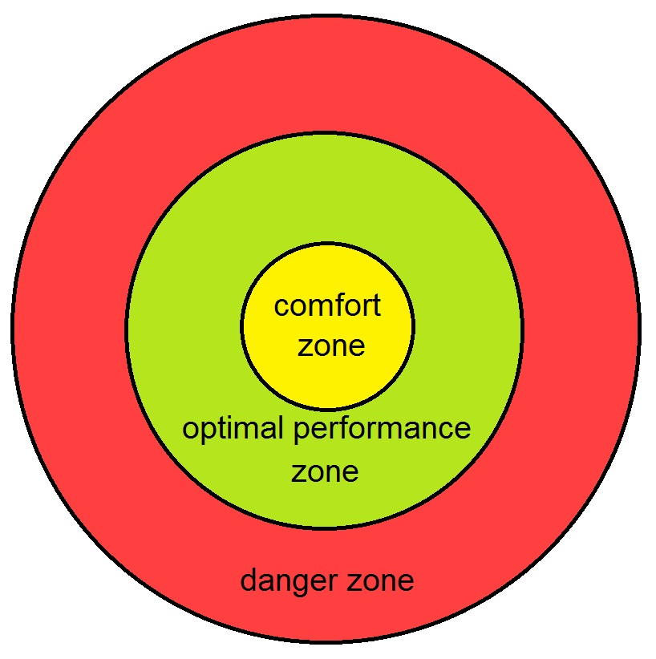

O tempo voa e já se foram mais de duas décadas compartilhando conteúdo de especialistas sobre uma "nova maneira" de criar produtos digitais. Você provavelmente já ouviu falar ou teve algum contato com disciplinas como Lean Startup, MVP, Design Sprint e Agile, ou outras buzzwords que se tornam tendência periodicamente.
No entanto, quando olhamos ao nosso redor e buscamos referências positivas dentro da comunidade que também leu todo o conteúdo produzido nos últimos 20 anos, não encontramos a adoção verdadeira das técnicas e ideias que valorizamos tanto.
O que encontramos é apenas uma pequena parcela das equipes de produto que implementou algumas ferramentas e processos, copiando modelos que funcionaram em outras empresas, sem nem mesmo considerar a necessidade individual do seu modelo de negócio.
O desafio de mudar a forma como desenvolvemos produtos não se refere apenas à adoção de frameworks e utilização de palavras da moda, mas superar velhos hábitos e ansiedades moldados na mente dos profissionais ao longo de décadas.
A adoção de um novo hábito não é tarefa fácil por diversos motivos. Ao adotar uma nova prática, ou modificar uma já existente, estamos assumindo que a velha prática talvez já não faça sentido para a realidade atual.
Mudanças fazem com que deixemos nossas zonas de conforto na busca de novas maneiras de pensar, agir e se relacionar, nos levando para a zona de desconforto.
Se existe muita resistência no ambiente em que estamos experimentando algo novo podemos esbarrar no que chamamos de zona de pânico, onde já não temos o controle emocional ou lógico para encontrar alternativas à mudança proposta.
 Referência: deliveryhero.com/blog/the-coaching-mindset/
A zona de conforto é quentinha
Por que nos arriscar em algo novo se o terreno em que caminhamos é dominado pelo time? Se sou especialista em
construir carruagens, por que devo me importar com a invenção dos carros? Dominar e ter certeza sobre assuntos
específicos parece muito atraente, mas pode ser mortal para sua carreira, produto e empresa.
Explore e domine o desconforto
Devemos buscar sempre a zona de desconforto, expandindo a área em que nos sentimos confortáveis, e isso não
significa estar fora de controle. Adotar algo novo exige que deixemos de ser especialistas (zona de conforto) e
nos tornemos iniciantes de uma nova maneira de pensar (zona de desconforto).
Isso é desconfortável - especialmente quando nos deparamos com desafios para os quais ainda não temos respostas. O que fazer então quando não soubermos algo? Fale: "Eu ainda não sei a resposta. Mas estou trabalhando nisso!”.
Como evitar a zona de pânico?
Começamos a sair da zona de desconforto para a zona de pânico quando nos deparamos com um experimento fracassado
(quase certo nos experimentos iniciais) que não sabemos justificar, perguntas de nossos clientes que ainda não
conseguimos responder, apresentações de resultados mal avaliadas por stakeholders e membros da equipe que não
têm um motivo claro para se comprometer com uma entrega.
Ninguém quer estar neste lugar. Podemos evitar isso começando pequeno, dando um passo de cada vez como apresentado pelas metodologias ágeis, também conhecido como MVP (Minimum Viable Product). Desta maneira reduzimos o escopo, e o tempo e energia investidos no momento em que exploramos um novo cenário.
Se perdemos o controle e nos deixamos ser levados da zona de desconforto para a zona de pânico, o que acontece a seguir é bastante previsível - voltamos ao modo antigo e não usufruímos dos benefícios do novo.
O valor de um novo hábito
Enfrentamos desafios de mudança de hábito o tempo todo. Por exemplo, sabemos que algumas atividades nos fazem
bem, como comer de forma saudável, fazer exercícios físicos e economizar dinheiro. No entanto, lutamos para
implementá-las em nosso dia a dia, e isso exige que deixemos o conforto, mesmo quando sabemos que o novo hábito
trará resultados positivos.
A adoção de um modelo de desenvolvimento de produto totalmente novo não é diferente, principalmente se você não tem o modelo mental ajustado para o momento atual do mundo.
Listamos dicas importantes para o desenvolvimento de novos hábitos que ajudam a criar produtos de forma sustentável.
Pergunte: Por que?
“No trabalho, tendemos a ficar obcecados com o como, mas raramente falamos sobre o porquê” — Dan Pink
Na vida profissional do trabalhador do conhecimento, somos constantemente desafiados a resolver problemas complexos. Quando nos deparamos com um desafio, frequentemente nos perguntamos: “Como podemos resolver isso?”.
É incrível como sempre estamos em estado de alerta e prontos para fornecer respostas. Queremos resolver imediatamente qualquer coisa que apareça em nossa frente. O senso de urgência somado à falta da indagação do “porquê” é um terreno fértil para nos perdermos na criação de soluções sem relevância. Somos vítimas da pressão do chefe, da competição, do time e da expectativa que criamos em nós mesmos, em nossas cabeças, considerando que, por sermos especialistas, temos que saber tudo.
De acordo com o jornalista e norte-americano H. L. Mencken, “Para todo problema complexo existe sempre uma solução simples, elegante e completamente errada“. Neste caso, se a solução não resolve o problema, será que estamos fazendo a pergunta adequada?
Durante a solução de um problema, se focarmos primeiro no “como” e não no “porquê”, podemos até chegar a uma solução que funciona, mas que não resolve o problema de fato. Será que vale a pena gastar nosso tempo trabalhando desta maneira somente para aliviar a pressão por respostas?
Quando não temos clareza dos motivos de estarmos fazendo o que estamos fazendo, colocamos nosso foco exageradamente na vazão (a quantidade de coisas que entregamos) e não no valor.
É fácil notar a diferença entre times que focam em "como resolver" em vez de focar no "por que resolver". Times que têm baixo interesse no impacto que novas features adicionam normalmente se interessam em “o que” e “como fazer” algo. Times que se interessam pelo usuário e como eles serão impactados, e acompanham as métricas das features lançadas são times interessados no “por que” fazer algo. Falaremos mais sobre eles adiante.
Ao responder a pergunta “por que resolver esse problema é importante para o produto?”, teremos uma melhor noção do impacto mais substancial e de longo prazo na vida do nosso time e na vida de nossos usuários. O nosso foco deve ser sempre gerar impacto.
Faça o seguinte teste para entender se você compreende o problema que está resolvendo:
-
Qual problema você está resolvendo?
-
Qual objetivo você busca alcançar?
-
Quem sofre com o problema que você está tentando resolver?
-
Por que você é a melhor pessoa para resolver esse problema?
-
Por que o que você está fazendo agora é importante?
Lembre-se: ao ser desafiado experimente se perguntar “por que resolver esse problema é importante?” em vez de “como podemos resolver esse problema?”.
Não se espante se você descobrir que para resolver um problema ou atingir um objetivo de negócio, você não precisa desenvolver funcionalidade alguma.
Faça menos
“90% de tudo é lixo” — Theodore Sturgeon (Lei de Sturgeon)
A frase acima pode ser chocante, mas é bastante realista. Existem outras frases mais suaves, ditas por cientistas famosos, que expressam a mesma ideia:
"80% dos resultados vêm de 20% das causas." — Vilfredo Pareto (Princípio de Pareto)
"Não falhei. Acabei de encontrar 10.000 maneiras que não funcionam." — Thomas Edison
Mas no fim do dia, dá para entender a mensagem que essas grandes personalidades querem dizer: experimentação é um jogo de testar, errar, aprender, iterar, tentar de novo.
Achamos ainda que eles estão sendo otimistas. O percentual de um tiro certeiro no escuro provavelmente é menor ainda.
O desenvolvimento de serviços e produtos não é uma atividade trivial, tornando-se ainda mais complexa se não evitarmos os desperdícios. Várias decisões precisam ser tomadas ao longo do caminho:
-
Qual problema estamos resolvendo?
-
Quem é o consumidor que tem esse problema?
-
Quais ferramentas e processos utilizar?
-
O que não estamos dispostos a fazer?
Como impedir que o nível de complexidade sempre aumente? Elimine desperdícios. Faça menos. Diga NÃO!
Temos aprendido a fazer escolhas sobre as tecnologias e formas de trabalho, mas ainda sentimos frio na barriga quando precisamos dizer NÃO.
De onde vem o medo de dizer não? É muito fácil dizer sim. Para dizer não, é necessário perder o medo do confronto. Ao invés disso, dizemos sim para um prazo irreal, sim para uma nova funcionalidade um dia antes da entrega, sim para uma contratação mediana. Você sabe aonde isso vai parar, não é mesmo? /p>
“As pessoas evitam dizer não para fugir de confrontos, mas a alternativa é pior ainda. As tarefas se arrastam, as coisas se complicam e trabalhamos com base em ideias nas quais não acreditamos.” — Jason Fried & DHH
Somos bombardeados por prazos apertados, demandas em que não acreditamos e, em vez de nos posicionarmos profissionalmente, evitamos o desconforto do NÃO. Sofremos construindo coisas que ninguém quer e trabalhando em algo em que não enxergamos valor.
Achamos que dizer NÃO demonstra falta de comprometimento ou desinteresse, mas dizer SIM para tudo atrapalha o foco no trabalho que realmente precisa ser feito.
Fazer menos é, antes de tudo, um exercício de priorização! Por maior que seja um desconforto é importante exercitar o NÃO.
“O mal do século XXI para o trabalhador do conhecimento é que a demanda é sempre muito maior que a nossa capacidade de entrega” — Rodrigo de Toledo
O NÃO é o meio para garantir que foquemos nossa capacidade nas principais demandas. Ele gera discussões importantes para o amadurecimento do serviço e/ou produto e dos profissionais envolvidos.
Desenvolver serviços e produtos exige dizer NÃO muitas vezes, além de pragmatismo para fazer menos.
Mudanças são bem-vindas!
“Mudança é constante, é essencial e é inevitável. Ou você é parte da mudança ou é impactado por ela.” — Roger Stanford
Seguindo as dicas do capítulo anterior, você já parou para pensar se está apenas seguindo um plano fixo?
"Planejar não é ter certeza de tudo, isso é uma planilha. Planejar é estar preparado para se adaptar às mudanças. Planejamento é saber que você precisa mudar de rota a cada 30 minutos." — Amir Klink
Jason Fried e David H. Hansson, no livro “Reinvente sua Empresa”, fazem a seguinte provocação: “Que tal chamar os planos pelo que realmente são? Palpites”. Nunca se esqueça do que o Manifesto Ágil diz: “Responder a mudanças mais do que seguir um plano”.
Mudanças não são o inimigo. O inimigo de seu sucesso é insistir em algo apenas por ego, medo ou preguiça.
Cuidado com o seu plano de negócios. Por mais elaborado que seja e por mais dedicação que o time tenha investido nele, você pode ser impactado por ele. E normalmente quando o impacto chega, todos sabemos que ele não vem com boas surpresas, não é mesmo?
Mexa-se
““Se mudanças estão acontecendo do lado de fora mais rapidamente do que do lado de dentro, o final está próximo.” — Jack Welch, Ex-CEO da GE
Grande parte das organizações foi criada buscando eficiência, ou seja, as pessoas criam processos com regras para resolver problemas lineares para estarem no controle das ações ao alcance delas. Aos poucos, estas organizações tornam-se burocráticas e com um monte de procedimentos para lidar com uma coisa ou outra, que no final, não agrega valor algum para os problemas que as pessoas na empresa estão tentando resolver.
Dessa forma, tornam-se empresas incapazes de se adaptar ao mundo complexo e não linear em que vivemos, pois encontram-se "engessadas" em um processo. Atualmente, empresas encontram nomes criativos como "monolito", "código legado" e outros termos para justificar a incapacidade de atender às mudanças necessárias.
“Nenhum plano de negócios sobrevive ao primeiro contato com o cliente” — Steve Blank
A saída para essa armadilha chama-se experimentação. Este é o remédio para a cultura corporativa onde você deve seguir os passos oficiais de um processo, não importa o quê. Você deve fazer o que é importante, não o que está desenhado em um processo. E o importante é aquilo que trará resultados, não aquilo que nos mantém dentro das expectativas do plano criado inicialmente.
Para isso, você precisa desenvolver um mindset de experimentação. Você precisa saber como desenvolver uma hipótese, como (in)validar uma hipótese (quais são as métricas de sucesso?), desenhar experimentos rápidos, aprender com as evidências e tomar decisões com base nos aprendizados.
"É melhor tomar muitas decisões por unidade de tempo com uma taxa de erro um pouco mais alta do que algumas com uma taxa de erro um pouco menor, porque obviamente uma das suas decisões corretas futuras pode ser reverter uma errada anterior, desde que a anterior não tenha sido catastrófica , o que raramente são." - Elon Musk
Um fluxo simples que nos permite criar planos mas, ao mesmo tempo, nos adaptarmos à mudança é o seguinte:
-
Hipóteses
-
Métricas
-
Experimentos
-
Evidências
-
Insights
-
Ações
Faça algo útil
“O mundo dos negócios está imerso em pilhas de documentos burocráticos que só servem para fazer as pessoas perderem tempo. São relatórios que ninguém lê, gráficos que ninguém estuda, e especificações que nunca lembram o produto acabado.” — Jason Fried & DHH
“Vai entregar no prazo?”
“Quantos por cento já entregamos?”
Costumamos ouvir essas perguntas no ciclo de desenvolvimento de produtos. Um Mea Culpa aqui: muitas vezes são os Product Managers que fazem estas perguntas… Mas estas perguntas são feitas porque a pressão exercida sobre nós é a de times e empresas que "projetizam" seus negócios em vez de focar nos resultados realmente úteis para seus negócios.
No primeiro momento parecem ser perguntas inofensivas, mas ao observar os comportamentos das pessoas podemos entendê-las como incentivos ao foco na entrega de funcionalidades e não de valor.
Em cenários como este é comum observar muito tempo e dinheiro sendo gastos sem expectativas de impacto significativo sobre a estratégia da empresa ou as necessidades dos consumidores (acredite, já passamos por estes ambientes, onde o esperado era mover todas as tarefas no nosso quadro Kanban de "a fazer" para "pronto").
Quando questionadas sobre a não entrega, as equipes encontram maneiras de justificar os maus resultados com “só precisamos de mais tempo” ou “da nossa parte está tudo ok, só falta…”, adiando qualquer decisão para entrega de valor e onerando ainda mais o orçamento da empresa, além de se esquivar da responsabilidade sobre o trabalho entregue.
Observando algumas organizações neste cenário, identificamos alguns problemas comuns:
- Custo alto de coordenação: e-mails intermináveis, prazos estourados, reuniões para marcar reuniões, ou seja, passamos maior parte do tempo trabalhando para justificar a não entrega do que de fato trabalhando para entregar.
-
Falta de aprendizado: como o foco é entregar coisas em um prazo determinado, as pessoas não sabem qual problema estão tentando resolver e qual o impacto para o negócio, gerando uma visão míope de propósito e, consequentemente, times reativos (esperam sempre decisões dos seus superiores).
-
ROI ausente: sensação de completude com base em atividades concluídas e não em entregas de valor para os clientes. Sem valor entregue não há ROI.
-
Produto estocado: funcionalidades construídas não estão em produção. Não há uso, e sem uso não há feedback, sem feedback não sabemos se estamos no caminho certo.
E se a eficiência do time não fosse um problema? Se tivéssemos o melhor time do mundo, estaríamos entregando valor para o cliente? Há apenas uma forma de validar isso: entregando e coletando feedback em ciclos curtos no mundo real.
Produto "no ambiente de produção", muitas vezes definido como o último estágio por um time, às vezes não é produto funcionando no mundo real. É preciso que o produto esteja nas mãos dos usuários para conseguir medir a real efetividade do que foi produzido.
“O uso define o produto” — Rafael Sabbagh
Seguindo esse raciocínio, fica claro que o problema não está na eficiência do time e sim na eficácia das suas entregas. Entregar algo de valor e impacto para o consumidor, de forma que ele utilize o produto e consiga dar feedbacks sobre o quão distante estamos de resolver seus problemas.
“Love the problem, not the solution” — Ash Maurya
Compreenda o problema que está tentando resolver: o que é, quem sente, quando acontece, qual o impacto. Não se perca em soluções maravilhosas de problemas que ninguém vive.
Conhecendo o problema profundamente, pense em uma solução simples e rápida, que não precisa atender todos os critérios, apenas a causa raiz do problema.
Pode até ser uma solução temporária, mas teste o uso com o consumidor e peça feedback. Meça o progresso com base no valor entregue.
Por mais complexo que o problema seja e já tenha sido identificada sua complexidade, vale sempre lembrar que todas as maratonas começam com um pequeno simples passo em direção ao objetivo final.
“Sucesso não é marcar uma caixinha
Sucesso é ter impacto.
Se você completa todas as tarefas e nada melhora, isso não é sucesso.” — @cwodtke
O que representa 90% de algo que não funciona ou ninguém usa? NADA, absolutamente NADA. A saída é focar em algo tangível, que gere impacto nos negócios e na vida dos clientes.
Produtos existem para resolver problemas ou melhorar o cenário atual em que o usuário se encontra. Se você trabalha todos os dias e não consegue acompanhar o impacto de seu trabalho na vida das pessoas, pare por um momento e reflita se você está trabalhando para satisfazer o processo ou o progresso.